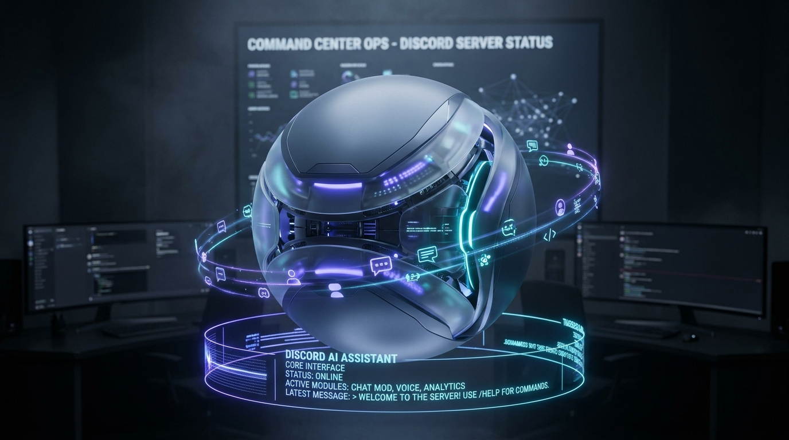
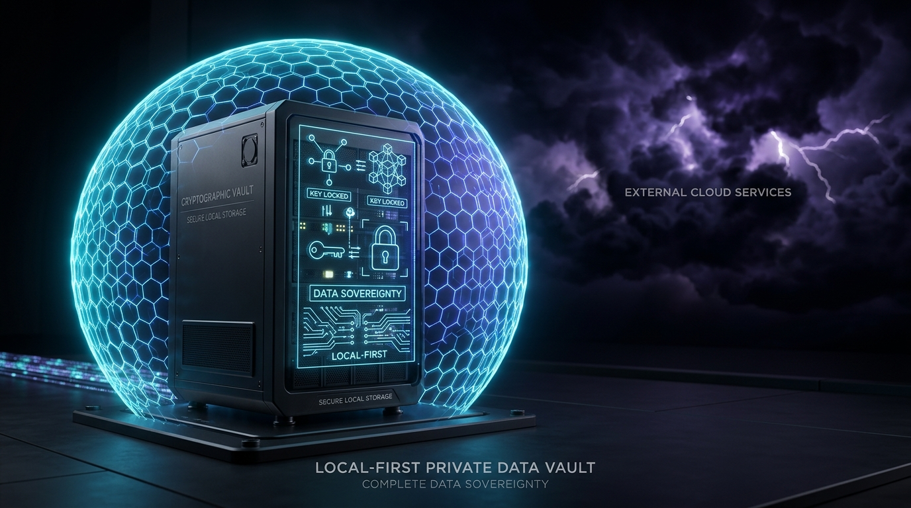
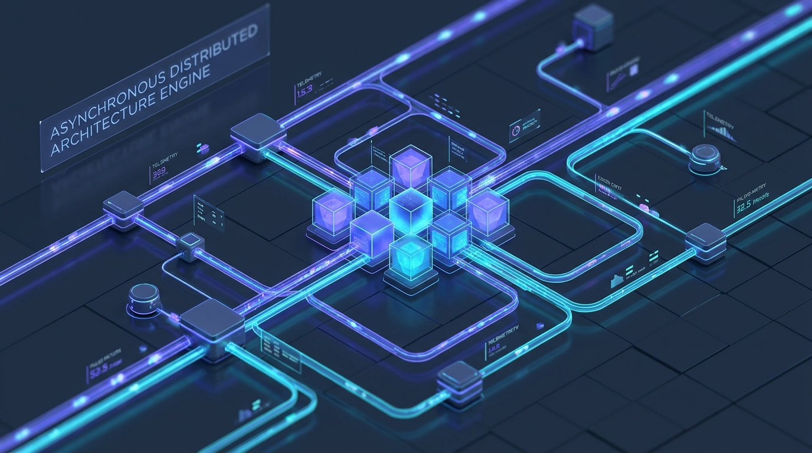

Layout: [Destaque Numérico / Stat Callout]
Assistente Autônomo Local-First no Discord
Plataforma inteligente orientada a eventos, combinando automação determinística e inteligência artificial híbrida.
34
Comandos Nativos com Prefixo (!)
46
Ferramentas de Function Calling
15
Agentes no Ecossistema de Governança
0.3s
Execução Total da Suíte (41 testes)

Layout: [Antes vs Depois / Comparativo de Fricção]
O Problema dos Bots Tradicionais
A transição da fragilidade e dependência de nuvem para a soberania local-first privada.
⚠️ Bots na Nuvem
- Dependência de APIs pagas (custo por token contínuo)
- Bloqueio de interface por I/O síncrono e lentidão
- Dados sensíveis expostos a terceiros
🛡️ Nossa Solução Local-First
- Inferência local soberana via LM Studio (Custo Zero)
- Loop 100% assíncrono e não-bloqueante
- Persistência privada com SQLite WAL e ChromaDB

Layout: [Split 50/50: Diagrama Arquitetural de Alta Resolução]
Arquitetura: Fast-Path vs Slow-Path
Roteamento inteligente desacoplado para máxima eficiência e tempo de resposta instantâneo.
🌐
Discord Gateway
Ingestão assíncrona de eventos via WebSocket em tempo real.
Zero Bloqueio
➔
⚡
Roteador Assíncrono
Triagem de comandos de prefixo (!) vs mensagens de texto aberto.
asyncio event loop
➔
🚀
Fast-Path (< 50ms)
Latência Mínima
34 Comandos Nativos: Agenda, lembretes, notas e sistema executados imediatamente sem custo de LLM.
🧠
Slow-Path (Motor de IA Híbrida)
Local + Failover
LM Studio Local + Gemini API: Raciocínio, síntese de linguagem e 46 Tools em SQLite WAL e ChromaDB.
⚡ Comandos Instantâneos: Execução determinística sem custo de tokens
🧠 IA Híbrida: LM Studio primário com transbordo resiliente na nuvem
💾 Persistência Dupla: SQLite WAL (ACID) + ChromaDB (Vetorial/RAG)
Layout: [3 Colunas de Cards]
Núcleo de Resiliência & Persistência
Infraestrutura sólida com proteção contra rate-limits e armazenamento dual ACID + Vetorial.
Message Gateway
- • Fila Leaky Bucket
- • Anti-spam por SHA256
- • Chunking de 2000 chars
SQLite Local (WAL)
- • Isolamento ContextVars
- • Transações ACID locais
- • Histórico e notas rápidas
ChromaDB Vetorial
- • Embeddings locais
- • RAG para PDFs e faturas
- • Similaridade semântica

Layout: [Timeline Horizontal / Esteira Operacional de Alto Impacto]
Demonstração: Esteira Operacional
Fluxo ponta a ponta de uma interação inteligente no Discord em tempo de execução real.
01
💬
1. Mensagem Usuário
Texto aberto, comando prefixado, áudio via whisper ou PDF anexado no canal.
Entrada Segura
02
🛡️
2. Message Gateway
Fila Leaky Bucket, deduplicação anti-spam com hash SHA256 e controle de vazão.
Proteção Anti-Ban
03
🔍
3. Tool Dispatcher
A LLM avalia a intenção e seleciona com precisão cirúrgica entre as 46 tools tipadas.
Schema JSON Estrito
04
⚙️
4. Execução Assíncrona
I/O e processamento pesado delegados para thread pool sem travar o event loop do Discord.
asyncio.to_thread
05
✨
5. Rich Embed Visual
Resposta elegante com badges temáticas, chunking semântico de 2000 chars e persona ativa.
UX Imersiva
🛡️ Anti-Ban Gateway: Descarte de duplicatas e vazão controlada
🔧 Validação Estrita: Zero alucinação na chamada de funções
💎 UX Imersiva: Formatação rica em blocos de Discord Embed
Layout: [Grade 2x2 / Matriz de Trade-offs]
Governança & Resultados Reais
Excelência de engenharia com soberania humana e testes automatizados contínuos.
🧪 Qualidade & Robustez
- 41 testes automatizados passando em apenas 0.31s
- Tipagem estática 100% PEP 484 sem atalhos
- Zero operações síncronas bloqueantes no Event Loop
👑 Soberania & Governança
- Humano no Comando: Operador como Arquiteto Soberano
- 15 Agentes Ativos: Engenharia, Red Team e Comunicação
- Controle versionado rigoroso em
gerencial/eSPECs/